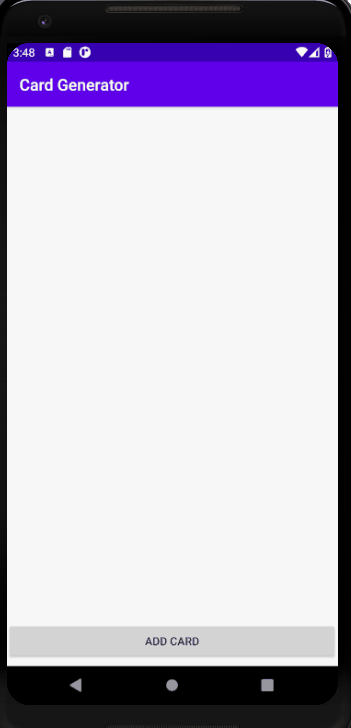

What is RecyclerView?
A RecyclerView is a flexible viewgroup for providing a limited window into a large data set. The purpose of the RecyclerView is to allow information to be presented to the user in the form of a scrollable list. The RecyclerView is significantly more efficient in the way it manages the views that make up a list, essentially reusing existing views that make up list items as they scroll off the screen instead if creating new ones (hence the name “recyclerâ€).
Random Card Generator Application
In the following sections, we are going to develop an application that uses RecyclerView to display Cards that are generated randomly. Each card is implemented as a CardView.

CardView
The CardView class is a user interface view that allows information to be presented in groups using a card metaphor. Cards are usually presented in lists using a RecyclerView instance and may be configured to appear with shadow effects and rounded corners.
The user interface layout to be presented with a CardView instance is defined within an XML layout resource file and loaded into the CardView at runtime. The CardView layout can contain a layout of any complexity using the standard layout managers such as RelativeLayout and LinearLayout.
card_layout.xml
<?xml version="1.0" encoding="utf-8"?>
<androidx.cardview.widget.CardView xmlns:android="http://schemas.android.com/apk/res/android"
xmlns:card_view="http://schemas.android.com/apk/res-auto"
android:id="@+id/card_view"
android:layout_width="match_parent"
android:layout_height="wrap_content"
android:layout_margin="5dp"
card_view:cardBackgroundColor="@android:color/holo_blue_dark"
card_view:cardCornerRadius="12dp">
<RelativeLayout
android:layout_width="match_parent"
android:layout_height="match_parent"
android:padding="16dp">
<TextView
android:id="@+id/suit_id"
android:layout_width="wrap_content"
android:layout_height="wrap_content"
android:layout_alignParentTop="true"
android:layout_marginStart="58dp"
android:layout_marginTop="8dp"
android:layout_toEndOf="@+id/card_id"
android:textSize="30sp" />
<TextView
android:id="@+id/card_id"
android:layout_width="wrap_content"
android:layout_height="wrap_content"
android:layout_alignParentStart="true"
android:layout_alignParentTop="true"
android:layout_marginStart="8dp"
android:layout_marginTop="8dp"
android:textSize="30sp" />
</RelativeLayout>
</androidx.cardview.widget.CardView>
As you can see, the cardview works as a top-level container that has a relative layout as a child element. Inside the relative layout, we have two text views that will be used to display our data. You can replace the relative layout with any layout you do prefer.
RecyclerView
It is a container for rendering a larger data set of views that can be recycled and scrolled very efficiently.  It uses a subclass of RecyclerView.Adapter for providing views that represent items in a data set.
activity_main.xml
<?xml version="1.0" encoding="utf-8"?>
<androidx.constraintlayout.widget.ConstraintLayout xmlns:android="http://schemas.android.com/apk/res/android"
xmlns:app="http://schemas.android.com/apk/res-auto"
xmlns:tools="http://schemas.android.com/tools"
android:layout_width="match_parent"
android:layout_height="match_parent"
tools:context=".MainActivity">
<androidx.constraintlayout.widget.Guideline
android:id="@+id/guideline"
android:layout_width="wrap_content"
android:layout_height="wrap_content"
android:orientation="horizontal"
app:layout_constraintGuide_percent="0.91" />
<Button
android:id="@+id/add_item"
android:layout_width="0dp"
android:layout_height="wrap_content"
android:text="Add card"
app:layout_constraintBottom_toBottomOf="parent"
app:layout_constraintEnd_toEndOf="parent"
app:layout_constraintStart_toStartOf="parent"
app:layout_constraintTop_toTopOf="@+id/guideline" />
<androidx.recyclerview.widget.RecyclerView
android:id="@+id/my_recycler_view"
android:scrollbars="vertical"
android:layout_width="0dp"
android:layout_height="0dp"
android:layout_marginStart="8dp"
android:layout_marginTop="8dp"
android:layout_marginEnd="8dp"
android:layout_marginBottom="8dp"
app:layout_constraintBottom_toTopOf="@+id/guideline"
app:layout_constraintEnd_toEndOf="parent"
app:layout_constraintStart_toStartOf="parent"
app:layout_constraintTop_toTopOf="parent" />
</androidx.constraintlayout.widget.ConstraintLayout>
The code provided above represents the layout file of the main activity. It uses constraint layout as the main container (@line2). The horizontal guideline is used to separate the button from the recycler view.
Item.java
package com.fit2081.recyclercard;
public class Item {
private String suit;
private String card;
public Item(String suit, String card) {
this.suit = suit;
this.card = card;
}
public String getSuit() {
return suit;
}
public String getCard() {
return card;
}
}
Each card consists of a suit and a card number. Item.java is a class that works as a record for one card. Later in the code, we will create an array list of cards using this class. The constructor is used to initialize the two instance variables while the two getters are used to retrieve their values.
RecyclerView.Adapter
The adapter is created as a subclass of the RecyclerView.Adapter class and must, at a minimum, implement the following methods, which will be called at various points by the RecyclerView object to which the adapter is assigned:
- getItemCount() – This method must return a count of the number of items that are to be displayed in the list.
- onCreateViewHolder() – This method creates and returns a ViewHolder object initialized with the view that is to be used to display the data. This view is typically created by inflating the XML layout file.
- onBindViewHolder() – This method is passed the ViewHolder object created by the onCreateViewHolder() method together with an integer value indicating the list item that is about to be displayed. Contained within the ViewHolder object is the layout assigned by the onCreateViewHolder() method. It is the responsibility of the onBindViewHolder() method to populate the views in the layout with the text and graphics corresponding to the specified item and to return the object to the RecyclerView where it will be presented to the user.
MyRecyclerAdapter.java
package com.fit2081.recyclercard;
import android.util.Log;
import android.view.LayoutInflater;
import android.view.View;
import android.view.ViewGroup;
import android.widget.TextView;
import androidx.annotation.NonNull;
import androidx.recyclerview.widget.RecyclerView;
import java.util.ArrayList;
public class MyRecyclerAdapter extends RecyclerView.Adapter<MyRecyclerAdapter.ViewHolder> {
ArrayList<Item> data = new ArrayList<Item>();
public void setData(ArrayList<Item> data) {
this.data = data;
}
@NonNull
@Override
public ViewHolder onCreateViewHolder(@NonNull ViewGroup parent, int viewType) {
View v = LayoutInflater.from(parent.getContext()).inflate(R.layout.card_layout, parent, false); //CardView inflated as RecyclerView list item
ViewHolder viewHolder = new ViewHolder(v);
Log.d("week6App","onCreateViewHolder");
return viewHolder;
}
@Override
public void onBindViewHolder(@NonNull ViewHolder holder, int position) {
holder.cardTv.setText(data.get(position).getCard());
holder.suitTv.setText(data.get(position).getSuit());
Log.d("week6App","onBindViewHolder");
}
@Override
public int getItemCount() {
return data.size();
}
public class ViewHolder extends RecyclerView.ViewHolder {
public TextView suitTv;
public TextView cardTv;
public ViewHolder(@NonNull View itemView) {
super(itemView);
suitTv = itemView.findViewById(R.id.suit_id);
cardTv = itemView.findViewById(R.id.card_id);
}
}
}
The code provided is the implementation of the RecyclerAdapter. It implements the three methods mentioned earlier and the ViewHolder subclass (@line44). The data is passed to the adaptor through a method called setData (@line18) which is called from the MainActivity.java (@line44). The method getItemCount (@line40) returns the size of the array list which is the number of items to be displayed in the list. The method onCreateViewHolder inflates the card's layout that we have implemented earlier each time a new card is required (@line25). It the passes v, which is a reference to the card layout to the contractor of ViewHolder local class. At line 28, the method returns the view holder object that will be an input to the next method onBindViewHolder. In the latter method, we receive two parameters, a viewer holder and a position. Our job is to retrieve the data at that position and place it in that view holder.
MainActivity.java
package com.fit2081.recyclercard;
import androidx.appcompat.app.AppCompatActivity;
import androidx.recyclerview.widget.LinearLayoutManager;
import androidx.recyclerview.widget.RecyclerView;
import android.os.Bundle;
import android.view.View;
import android.widget.Button;
import java.util.ArrayList;
import java.util.Random;
public class MainActivity extends AppCompatActivity {
ArrayList<Item> data = new ArrayList<>();
String suits[] = {"Hearts", "Diamonds", "Clubs", "Spade"};
String cards[] = {"2", "3", "4", "5", "6", "7", "8", "9", "10", "Jack", "Queen", "King", "Ace"};
Button btn;
RecyclerView recyclerView;
RecyclerView.LayoutManager layoutManager;
MyRecyclerAdapter adapter;
@Override
protected void onCreate(Bundle savedInstanceState) {
super.onCreate(savedInstanceState);
setContentView(R.layout.activity_main);
btn = findViewById(R.id.add_item);
btn.setOnClickListener(new View.OnClickListener() {
@Override
public void onClick(View v) {
addItem();
}
});
recyclerView = findViewById(R.id.my_recycler_view);
layoutManager = new LinearLayoutManager(this); //A RecyclerView.LayoutManager implementation which provides similar functionality to ListView.
recyclerView.setLayoutManager(layoutManager); // Also StaggeredGridLayoutManager and GridLayoutManager or a custom Layout manager
adapter = new MyRecyclerAdapter();
adapter.setData(data);
recyclerView.setAdapter(adapter);
}
public void addItem() {
Random random = new Random();
int randCard = random.nextInt(cards.length);
int randSuit = random.nextInt(suits.length);
Item item = new Item(suits[randSuit], cards[randCard]);
data.add(item);
adapter.notifyDataSetChanged();
}
}
In the code above, we have created three entities, a recycler view (@line37), dataset (@line16), and an adapter (@line43). The adapter works as a bridge between the recyclerview and the dataset (@line43,44).
Each time the data gets changed, you should notify the adapter by calling adapter.notifyDataSetChanged() in order to update the recycler view (i.e. the UI)
References:
- Smyth, Neil. Android Studio 3.5 Development Essentials - Java Edition: Developing Android 10 (Q) Apps Using Android Studio 3.5, Java and Android Jetpack . Payload Media, Inc.. Kindle Edition.
- https://developer.android.com/